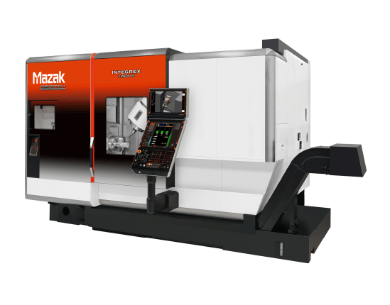
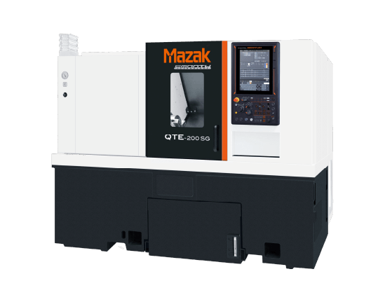
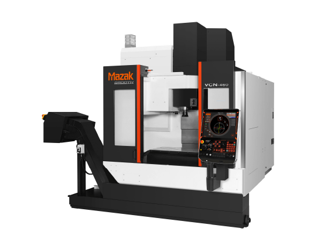
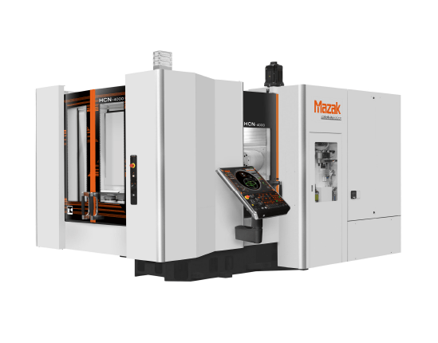
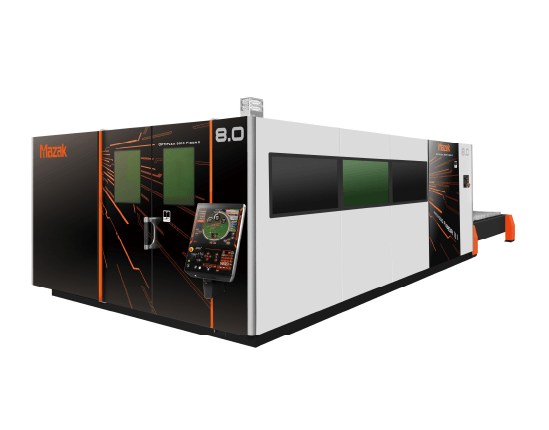
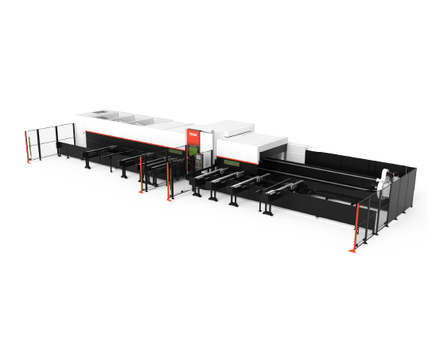
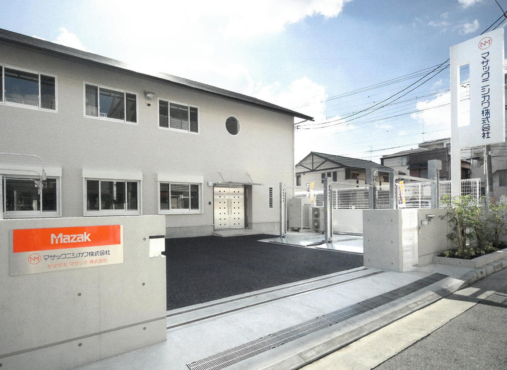

PRODUCT
商品のご案内
- 
INTEGREX
ターニングセンタとマシニングセンタを結合し、高精度な位置決めと加工ができます。
コンパクトミル主軸により加工範囲を広げ、干渉領域を削減できます 
INTEGREX
同時５軸制御が可能なマシニングセンタです。
一度の段取りでワークの上面・側面の加工が可能、また同時５軸制御により複雑な３次元曲面加工も実現できます。- 
INTEGREX
ビルトインモーター主軸を搭載しており、高速・高精度な加工ができます。
旋削・ミル加工・Y軸仕様・第2主軸仕様など豊富なラインナップを展開しています。 - 
INTEGREX
重量ワーク加工から高速ミル加工まで、幅広いアプリケーションに対応しています。
コラム型、門型が展開されています。 - 
INTEGREX
高剛性構造により高精度の加工が可能です。
豊富な主軸バリエーションによりさまざまな被削材質に対応してます。
自動化システム（オプション）により量産部品の高能率加工に適しています。 - 
INTEGREX
様々な板厚、材質を高速・高精度の加工をし、生産リードタイムを極限まで短縮するマザックのレーザー加工機。
幅広いラインアップのファイバーレーザー加工機をはじめ、丸・角パイプまた異形形状も加工可能な３次元レーザー
加工機３D FABRI GEARシリーズも充実しております。 - 
長時間の無人化運転を実現するパレットストッカシステム、ガントリーローダシステム、またロボットシステムと工作機械を連携させた自動化システムなど、長年蓄積した自動化システムのノウハウを生かし、お客様のご希望に合わせた最適な生産システムをご提供します。
CORPORATE
INFORMATION
会社概要
| 会社名 | マザックニシカワ株式会社 |
|---|---|
| 設立 | 1984年3月24日 |
| 代表取締役 | 代表取締役 西川 正一 |
| 所在地 | 〒660-0051 兵庫県尼崎市東七松町1-10-2 TEL : 06-6487-3455（代）/ FAX : 06-6487-2726 |
| 資本金 | 30,000,000円 |
| 株主 | 西川産業株式会社、ヤマザキマザック株式会社 |
| 役員 | ・代表取締役 西川 正一 ・取締役 西川 裕二 ・取締役 志村 雅人（非常勤） ・監査役 間島 慎太郎 |
| 営業品目 | （1）ヤマザキマザック株式会社性CNC工作機械及びCNC工作機械全製品及びCNCレーザ加工製品の販売 （2）FMS及び（1）に付属する自動化ロボットと周辺機器、CAD/CAMの販売 （3）工作機械に関連する機器及び工具の販売 （4）その他の工作機械の販売 （5）建設業 |
| 事業内容 | ヤマザキマザック株式会社製、CNC工作機械全製品の専売代理店、前記に付記するロボット及び周辺機器の販売 ヤマザキマザック株式会社、全製品の保守輸出入 各種工場の設備自動化の技術指導 前各号に関連する事業の共同経営、投資、設備の貸与並びに割賦販売 |
FINANCIAL
INFORMATION
財務情報
| 売上高 （百万円） |
申告所得 （千円） |
自己資本額 （千円） |
自己資本比率 | 経常利益 （千円） |
純利益 （千円） |
流動比率 | |
|---|---|---|---|---|---|---|---|
| 2024年 3月期（計画） | 1,295 | 38,800 | 602,000 | 71% | 48,100 | 34,500 | 200.00% |
| 2023年 3月期（計画） | 869 | 0 | 567,376 | 80% | 1,488 | 132 | 210.13% |
| 2022年 3月期（計画） | 793 | △7,090 | 567,244 | 71.13% | △8,049 | △8,704 | 155.99% |
| 2021年 3月期（計画） | 748 | △13,231 | 575,948 | 70.42% | △11,365 | △8,501 | 376.87% |
| 2020年 3月期（計画） | 1,441 | 71,307 | 593,448 | 58.88% | 87,729 | 59,323 | 187.56% |
| 2019年 3月期（計画） | 1,324 | 108,424 | 546,124 | 69.34% | 112,712 | 70,389 | 263,59% |
| 2018年 3月期（計画） | 1,002 | 36,314 | 481,734 | 83.40% | 39,075 | 30,753 | 444.80% |
| 2017年 3月期（計画） | 1,136 | 50,075 | 458,181 | 63.38% | 53,857 | 37,154 | 215.03% |
| 2016年 3月期（計画） | 1,316 | 70,807 | 428,528 | 57.33% | 72,905 | 50,674 | 185.54% |
| 2015年 3月期（計画） | 890 | 629 | 379,355 | 80.00% | 5,229 | 5,458 | 332.83% |
| 2014年 3月期（計画） | 850 | △5,168 | 373,897 | 62.49% | 4,783 | 3,295 | 194.83% |
| 2013年 3月期（計画） | 760 | △40,337 | 370,601 | 76.74% | △32,440 | △32,519 | 284.28% |
| 2012年 3月期（計画） | 991 | 77,472 | 406,720 | 62.77% | 76,220 | 45,008 | 199.87% |
| 2011年 3月期（計画） | 966 | 2,741 | 363,212 | 78.05% | 8,320 | 6,263 | 289.7% |
| 2010年 3月期（計画） | 1,118 | △19,231 | 356,948 | 84.60% | 16,616 | △20,600 | 383.25% |
| 2009年 3月期（計画） | 1,471 | 23,729 | 382,049 | 79.70% | 46,158 | 42,856 | 308.60% |
| 2008年 3月期（計画） | 1,571 | 64,974 | 378,104 | 69.03% | 72,071 | 42,856 | 177.83% |
| 2007年 3月期（計画） | 1,766 | 105,324 | 345,748 | 69.07% | 107.201 | 60,610 | 205.44% |
| 2006年 3月期（計画） | 1,295 | 86,334 | 294,137 | 58.44% | 88,092 | 55,703 | 203.45% |
HISTORY
沿革
| 1984年 | 3月 | 山崎鉄工所と西川産業株式会社が提携し、社員8名に西川マザック株式会社を設立 |
|---|---|---|
| 1985年 | 10月 | 山崎鉄工所からヤマザキマザック株式会社へ社名変更（創業60周年事業として） |
| 1986年 | 2月 | マザックニシカワ株式会社へ社名変更 |
| 1987年 | 6月 | ヤマザキマザック欧州工場（英国ウエスター）完成記念世界代理店会議開催において、西川社長日本代表として出席 |
| 1988年 | 4月 5月 | 工作機械業界では西日本最大規模の展示ホール、ヤマザキマザック西日本テクノホール（東大阪市）完成 西川産業の旧西淀川営業所を購入、及び改装、事務所を移転 |
| 1990年 | 5月 6月 | ヤマザキマザック米国CIM工場（ケンタッキー州フローレンス）完成記念世界代理店会議に、西川社長西日本代表として出席 創業5周年記念台湾旅行 |
| 1998年 | 3月 | 創業15周年ご夫婦招待旅行「シンガポール思い出の旅」 |
| 1999年 | 7月 | 創業15周年記念大講演会「成功への哲学」（講師：藤井妙法先生） |
| 2002年 | 3月 | 環境ISO14001を認証所得 |
| 2004年 | 6月 | 創業20周年ご夫婦招待旅行「シンガポール・ビンタン島の旅」 |
| 2005年 | 2月 | 品質ISO9001を認証取得 |
| 2007年 | 11 | 新社屋（尼崎東七丁目）に移転 |
| 2009年 | 9月 | 創業25周年記念大講演会「サブプライムに負けるな・日本の中小企業の底力」（講師：橋本久義先生） |
| 2014年 | 5月 | 創業30周年記念ヤマザキマザック株式会社との食事会「聘珍樓」にて |
| 2016年 | 2月 5月 | 全営社員へSurface Pro3貸与 「ひょうご仕事と生活の調和推進宣言」企業として登録 |
| 2019年 | 3月 4月 7月 | 創業35周年記念ご夫婦招待旅行「香港マカオの旅」 西川産業（株）創業70周年記念 ハワイ社員旅行 ご夫婦招待旅行「利尻島・礼文島 3日間の旅」 |
| 2020年 | 9月 12月 | COVID-19のためシカゴショー中止 COVID-19のためJIMOTOF中止 |
| 2022年 | 2月 9月 11月 | 会社支給iPhone10台を最新機種に入れ替える ご夫婦招待旅行「京都3日間の旅」 日本国際工作機械見本市（JIMOTO）ツアー2日日間を4年ぶりに実施 |
| 2023年 | 5月 | 建設業許可書取得 |
ACCESS
アクセス

マザックニシカワ株式会社
〒660-0051 兵庫県尼崎市七松町1-10-2
TEL:06-6487-3455（代）
FAX:06-6487-2726